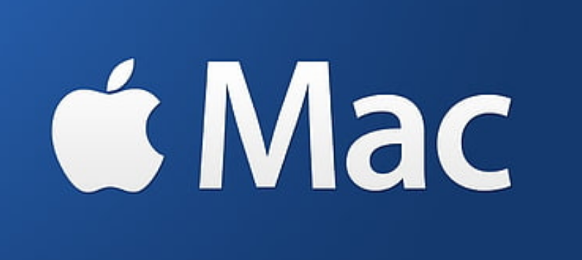

System Security
What is System Security?
 The security of a computer system is a crucial task. It is a process of ensuring the confidentiality and
integrity of the OS.
The security of a computer system is a crucial task. It is a process of ensuring the confidentiality and
integrity of the OS.
A system is said to be secure if its resources are used and accessed as intended under all circumstances, but
no system can guarantee absolute security from several of various malicious threats and unauthorized access.
Security violations affecting the system can be categorized as malicious and accidental threats. Malicious
threats, as the name suggests are a kind of harmful computer code or web script designed to create system
vulnerabilities leading to back doors and security breaches. Accidental Threats, on the other hand, are
comparatively easier to be protected against.
System Security Features

For additional privacy and security, many Apple services use end-to-end encryption, which means that only
you can decrypt and access your information, and only on trusted devices where you're signed in with your
Apple ID.
Salesforce Security model assists you in protecting information at various levels, from such an org level
down to a personal record. The Organization, Objects, Records, and Fields are the logical tiers of security.
While using the model allows users to safeguard the organization's information at four layers. Security
protocols also includes multi-factor authentication.
 As a user you can only access TimeSponge by using a registered user name and password, this keeps your data
safe and encrypted.
As a user you can only access TimeSponge by using a registered user name and password, this keeps your data
safe and encrypted.
 Sage 300’s data is encrypted and password protected and is hosted on IronTree's servers that is
protected by firewalls. Sage One Accounting’s data is held in the service cloud and is password protected
and encrypted.
Sage 300’s data is encrypted and password protected and is hosted on IronTree's servers that is
protected by firewalls. Sage One Accounting’s data is held in the service cloud and is password protected
and encrypted.
 SigningHub provides a secure way to sign documents. The vendor's value proposition is that their solution
provides long-term advanced electronic signatures that are legally compliant and independently verifiable.
This solution caters to all levels of signature including EU qualified signatures.
SigningHub provides a secure way to sign documents. The vendor's value proposition is that their solution
provides long-term advanced electronic signatures that are legally compliant and independently verifiable.
This solution caters to all levels of signature including EU qualified signatures.
Messages encrypted with Microsoft 365 stay encrypted and remain inside the Microsoft 365 Personal File.
This helps secure your email when it's received.
 VPN security enables users to protect their online privacy and prevent their internet service provider
(ISP) from tracking their browsing activity. It works by connecting a user's device to the VPN server,
then passing their internet traffic through the VPN provider's internet connection.
VPN security enables users to protect their online privacy and prevent their internet service provider
(ISP) from tracking their browsing activity. It works by connecting a user's device to the VPN server,
then passing their internet traffic through the VPN provider's internet connection.
 Antivirus protection scans your files and your incoming email for viruses, and then deletes anything
malicious. You must keep your antivirus software updated to cope with the latest "bugs" circulating the
internet. Most antivirus software includes a feature to download updates automatically when you are online.
Antivirus protection scans your files and your incoming email for viruses, and then deletes anything
malicious. You must keep your antivirus software updated to cope with the latest "bugs" circulating the
internet. Most antivirus software includes a feature to download updates automatically when you are online.
When you upload a file of any type to Google Drive, it is stored securely in our world-class data centers.
Data is encrypted in-transit and at-rest. If you choose to access these files offline, we store this info on
your device.
All LinkedIn accounts are already protected by a series of automatic checks that are designed to thwart
unauthorized sign-in attempts and keep your data safe.
 Microsoft offers robust, multi-layered protection for data security in SharePoint Online. While BitLocker
provides disk-level encryption of all data, per-file encryption ensures every change to a file is encrypted
using a unique encryption key.
Microsoft offers robust, multi-layered protection for data security in SharePoint Online. While BitLocker
provides disk-level encryption of all data, per-file encryption ensures every change to a file is encrypted
using a unique encryption key.
 Placement Partner is password-protected and is hosted on an encrypted secure connection which makes
unauthorised access virtually impossible.
Placement Partner is password-protected and is hosted on an encrypted secure connection which makes
unauthorised access virtually impossible.
 Our hosting company, host our website in a secure server environment that uses a firewall and other advanced
security measures to prevent interference or access from outside intruders. We authorize access to personal
information only for those employees who require it to fulfil their job responsibilities. We implement disaster
recover procedures where appropriate.
Our hosting company, host our website in a secure server environment that uses a firewall and other advanced
security measures to prevent interference or access from outside intruders. We authorize access to personal
information only for those employees who require it to fulfil their job responsibilities. We implement disaster
recover procedures where appropriate.
 WhatsApp secures your conversations with end-to end encryption. Your messages and calls stay between you
and the people and businesses you choose. Not even WhatsApp can read or listen to them.
WhatsApp secures your conversations with end-to end encryption. Your messages and calls stay between you
and the people and businesses you choose. Not even WhatsApp can read or listen to them.
Microsoft Teams enforces team-wide and organization-wide two-factor authentication, single sign-on through
Active Directory, and encryption of data in transit and at rest. Files are stored in SharePoint and are backed
by SharePoint encryption. Notes are stored in OneNote and are backed by OneNote encryption.
Liyema Group - Cyber Security SOP